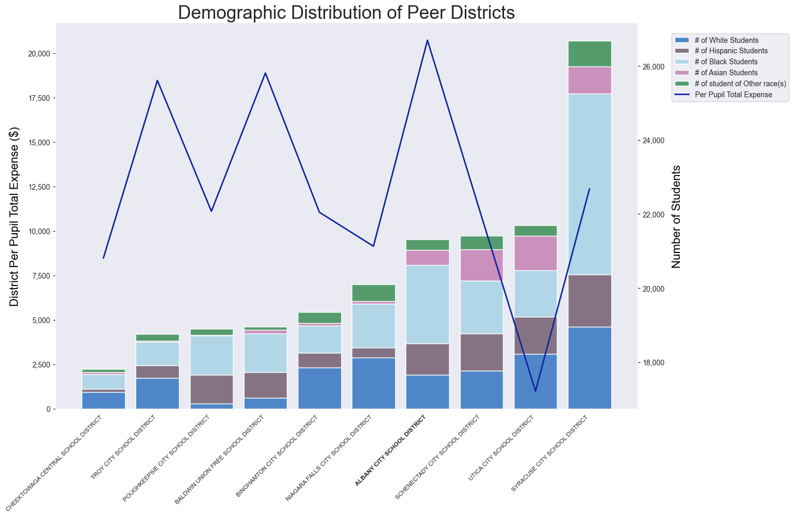
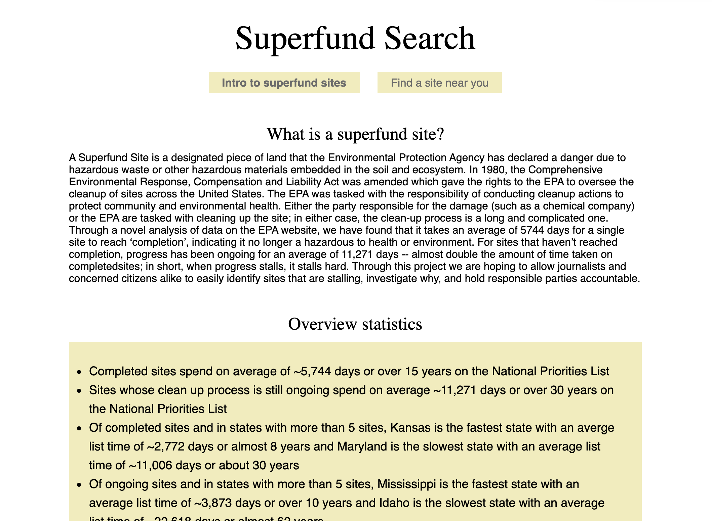
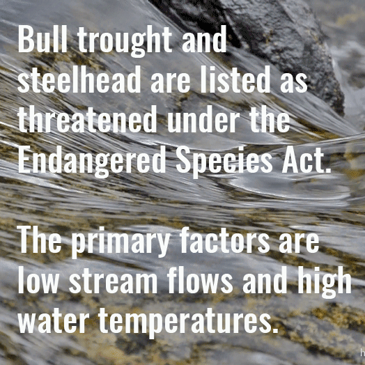

other projects

school analytics graphics & report
2021-present
tools: python (matplotlib & seaborn)
one of several design projects for edstruments as a summer data viz & design intern. as the only designer at the start-up, responsibilites include developing fundamental color palette and branding materials for the company in addition to designing & coding reports, dashboards, and graphs. the project displayed to the left involved coding graphics and charts by hand to be used for prospective clients.

superfund search
2021
tools: python, jinga2, vegalite, html, css, javascript
website developed for the programming & journalism class building news applications. as the lead designer on a team of two other students, I wrote the code for the entire website and made all design decisions regarding color, style, and typography. I also created all data visualizations using vegalite api, and used python to do half of the back-end data cleaning, preparing, and analyzing. see the live website here and the underlying code here.

greene wrld: branding & website
2021
tools: figma, blender, photoshop, procreate
developed a brand for the class visual frontiers at stanford university. work involved creating a logo, color, scheme, identity, and finally a figma website prototype. check out branding materials and the websiter here.


greene wrld: posters
2021
tools: digital photography, photoshop, procreate
posters created as a part of greene wrld identity & branding.


auburn university land ownership investigation
2020
tools: python
data journalism final project. found, scraped, cleaned, analyzed and then visualized auburn university land parcel data over time. the final presentation was made in jupyter notebook and can be found here.

washington water trust social media branding
2018
tools: photoshop, after effects
created a new branding strategy for washington water frust as an intern in 2019. strategy including font and color recommendations, templates for future social media posts, and a large collection of ready to use images and graphics. increased social media engagement by over 150%. see more examples and brand presentation slides here.